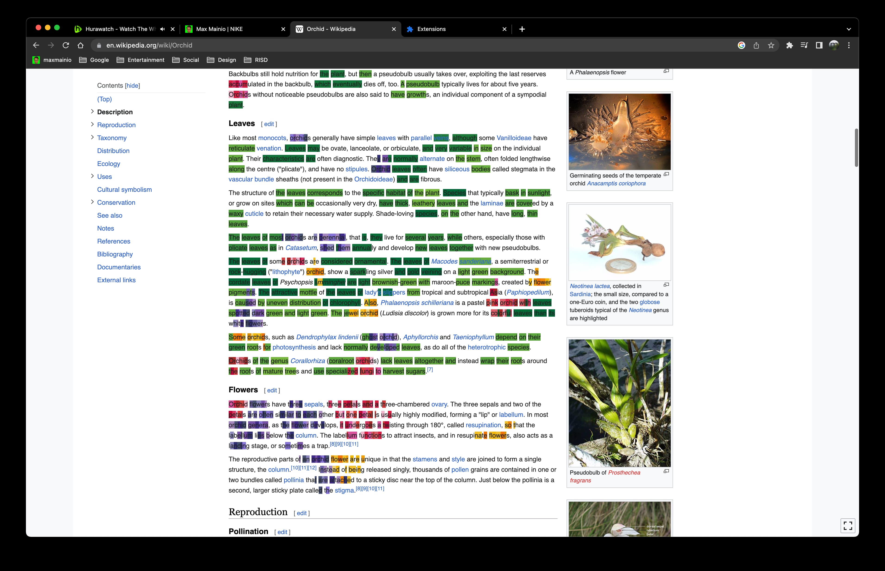
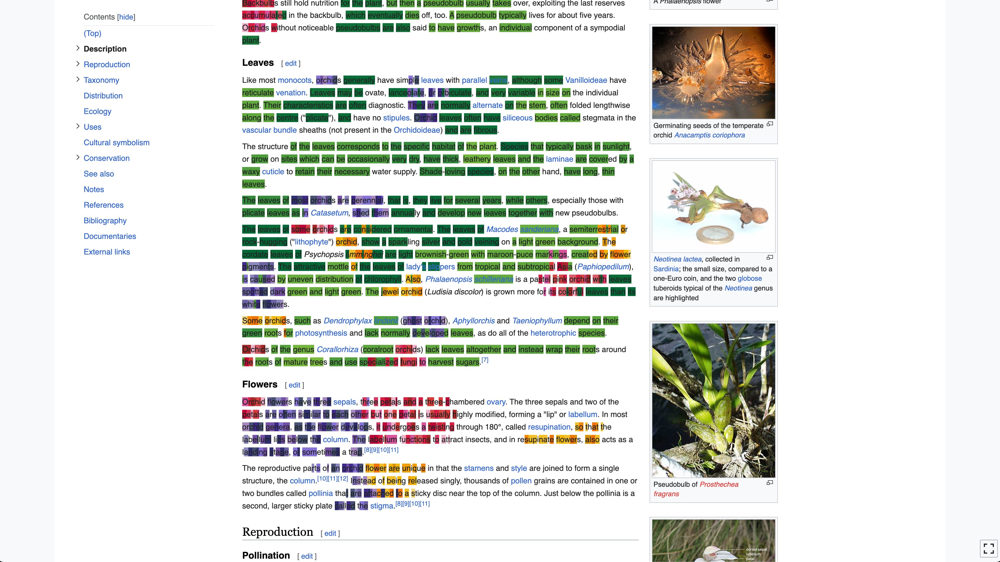
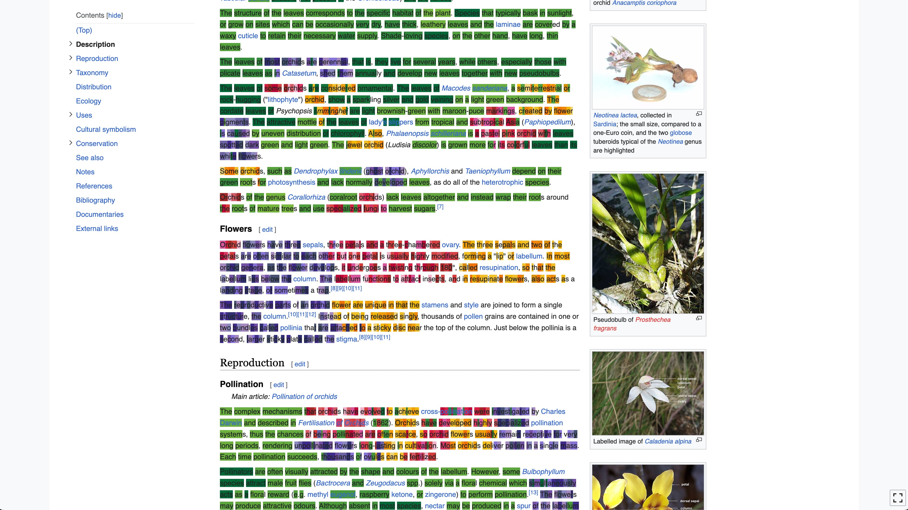
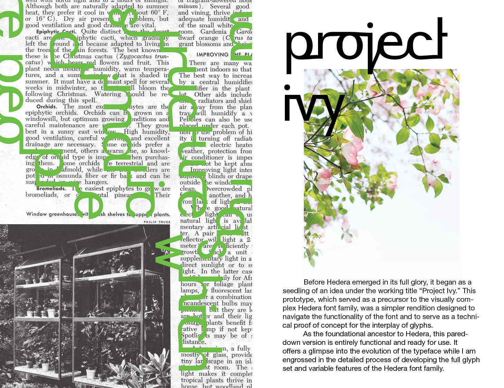
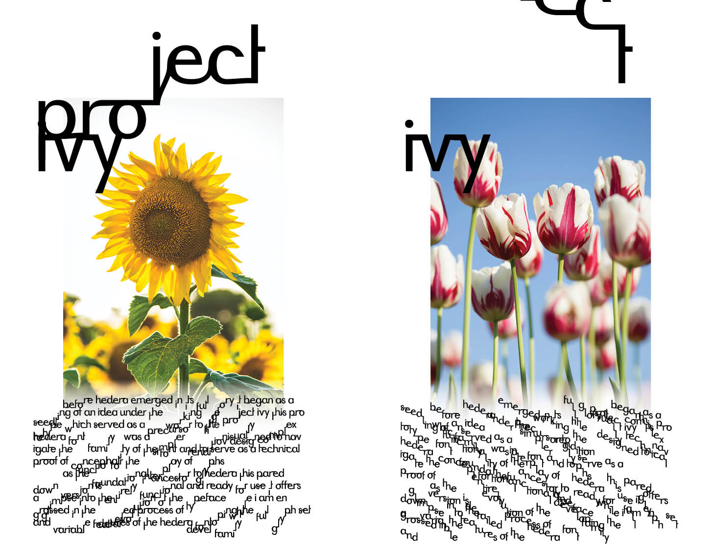
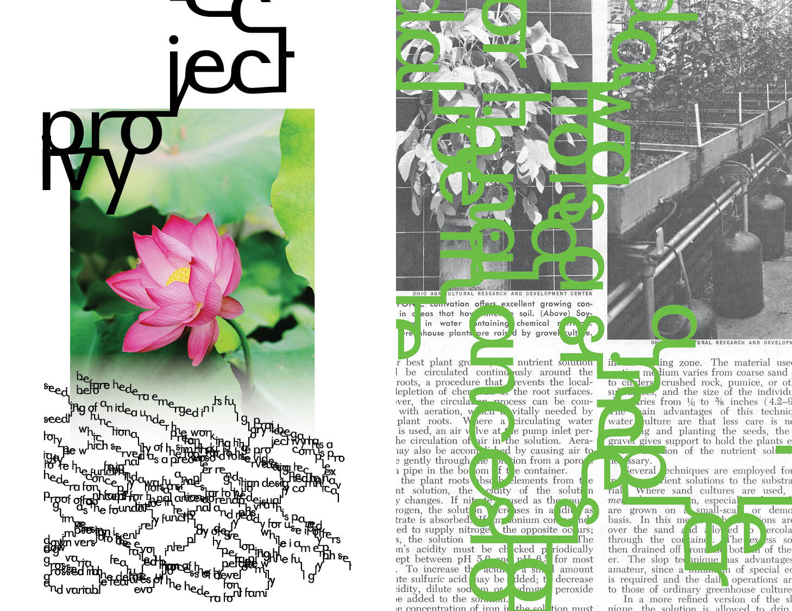

NIKE
Nike Internship Application / 2023
I have created this temporary subpage on my website for my application to the NIKE 3D & Visuals internship in 2023. All of the work on this page will someday have their own subpages, but, as you can read in my footer: this website is in a constant state of “work in progress” so, in the meantime I have gathered some videos on here to show off for he select few who will get a direct link.
NOTICE! This subpage is not linked to from any of the other pages on my website, so the only way to get here is through the link you used to get here in the first place. I welcome you to explore my website!
Type in Flux
This project was for my Typography 3 course, I’m currently working on expanding on it. In this moving poster I tried to visualize reality melting into type. The method I came up with to simulate the dripping water is very similar to the system I made to model the moss growth seen in an earlier slide, just with an additional downward force to simulate the falling effect.
IMG Stacker
The possible variety of effects this algorithm can produce can serve to add energy and motion to images or videos, it can completely abstract any input into infinitely tileable camouflage like textures, it can revamp and refresh old imagery, instilling it with new life.
IMG Stacker
This generative system has a handful of variables, but the main concept is that it separates the input image or video into areas of more or less hue, saturation, or vibrance. Stacking these varying areas on top of the original image completes the effect. By manipulating the variables you can easily generate millions of unique variations of this effect.
Detail Pixelator
Graphic Design portfolio
Motion & 3D portfolio
BFA Degree project:
Seam Carving
This work already has a subpage with a full description and some interactive features.
Lawn Texture
Lawn Texture
Lawn Texture
Lawn Texture
Project Ivy
Sadly this work does not have its own dedicated page at the moment, although it is in the works!
This project was the third part of my degree project. Where the first part highlighted human destructive intervention of nature, the second explored the idea of introducing a natural element into a purely human world and letting it work its restoring powers, this third part serves as a collaboration between the two.
Using OpenType features and variable font technology I created a typeface that connects every glyph to their immediate neighbor. Manipulating the variable axis their collections shift around, up and down, the words that once sat on the baseline are now growing out of control, swinging across your screen like branches is the wind, or the long tendrils of ivy as it creeps it’s way along a wall it is growing on and around.
  